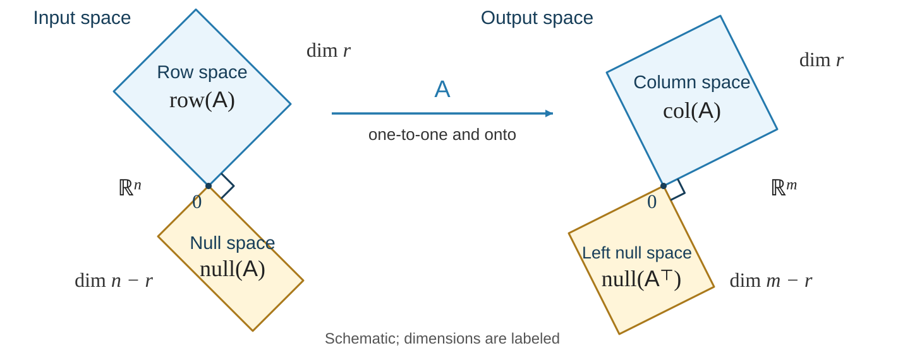

Matrix Spaces and Rank
Anton, Rorres, & Kaul §§4.8–4.9
November 12, 2026
For an \(m\times n\) matrix \(\mat{A}\):
| Space | Definition | Lives in |
|---|---|---|
| \(\operatorname{col}(\mat{A})\) | span of the columns of \(\mat{A}\) | \(\reals^m\) |
| \(\operatorname{null}(\mat{A})\) | solutions of \(\mat{A}\vct{x}=\vct{0}\) | \(\reals^n\) |
| \(\operatorname{row}(\mat{A})\) | span of the rows of \(\mat{A}\) | \(\reals^n\) |
| \(\operatorname{null}(\mat{A}^\top)\) | solutions of \(\mat{A}^\top\vct{y}=\vct{0}\) | \(\reals^m\) |
Always identify the ambient space before comparing subspaces
Transposing exchanges rows and columns; view row-space vectors as columns
\(\operatorname{col}(\mat{A})=\operatorname{row}(\mat{A}^\top)\), \(\quad\operatorname{row}(\mat{A})=\operatorname{col}(\mat{A}^\top)\)
Recall: dimension is the number of vectors in a basis
For \(\mat{A}\in\reals^{m\times n}\), define
\[ \operatorname{rank}(\mat{A})=\dim(\operatorname{col}(\mat{A})), \qquad \operatorname{nullity}(\mat{A})=\dim(\operatorname{null}(\mat{A})) \]
Row reduction gives
\[ 0\le\operatorname{rank}(\mat{A})\le\min(m,n) \]
Rank counts independent output directions; nullity counts lost input directions
For an \(m\times n\) matrix \(\mat{A}\),
\[ \boxed{\dim(\operatorname{col}(\mat{A})) +\dim(\operatorname{null}(\mat{A}))=n} \]
Equivalently, \(\operatorname{rank}(\mat{A})+\operatorname{nullity}(\mat{A})=n\)
Every input variable is either a pivot variable or a free variable:
Column-space dimension + null-space dimension = number of columns
Think of \(\mat{A}\vct{x}=\vct{b}\) as a model, a measurement, or a physical balance
| Space | Practical meaning |
|---|---|
| \(\operatorname{col}(\mat{A})\subseteq\reals^m\) | All outputs \(\vct{b}\) the model can produce |
| \(\operatorname{null}(\mat{A})\subseteq\reals^n\) | Input changes that leave the output unchanged |
| \(\operatorname{row}(\mat{A})\subseteq\reals^n\) | Vectors \(\vct{c}\) whose input combination \(\vct{c}^\top\vct{x}\) is determined by exact outputs |
| \(\operatorname{null}(\mat{A}^\top)\subseteq\reals^m\) | Relations every attainable output must satisfy |
Peek at Matrix Spaces in Applications
Column space describes what can happen; null space describes what can change invisibly
Row space describes what we can learn about the input
Reduce our running example to row echelon form:
\[ \mat{A}= \begin{bmatrix} 1&2&1&3\\ 2&4&0&4\\ 1&2&2&4 \end{bmatrix} \quad\longrightarrow\quad \mat{E}= \begin{bmatrix} 1&2&1&3\\ 0&0&1&1\\ 0&0&0&0 \end{bmatrix} \]
Pivot columns: \(1,3\); free variables: \(x_2,x_4\)
\[ \operatorname{rank}(\mat{A})=2, \qquad \operatorname{nullity}(\mat{A})=2 \]
Row echelon form identifies pivots, rank, and free variables
For the running \(3\times4\) matrix, the pivot columns are \(1\) and \(3\)
A basis for the column space uses pivot columns of the original matrix:
\[ \left\{ \begin{bmatrix}1\\2\\1\end{bmatrix}, \begin{bmatrix}1\\0\\2\end{bmatrix} \right\} \]
A basis for the row space uses nonzero rows of the row echelon matrix:
\[ \left\{ \begin{bmatrix}1\\2\\1\\3\end{bmatrix}, \begin{bmatrix}0\\0\\1\\1\end{bmatrix} \right\} \]
Row reduction preserves the row space but generally changes the column space
Row operations preserve solutions: \(\mat{A}\vct{x}=\vct{0}\iff\mat{E}\vct{x}=\vct{0}\)
Back substitution in \(\mat{E}\vct{x}=\vct{0}\), with free variables \(x_2,x_4\), gives:
\[ x_1=-2x_2-2x_4, \qquad x_3=-x_4 \]
Therefore
\[ \vct{x} =x_2\begin{bmatrix}-2\\1\\0\\0\end{bmatrix} +x_4\begin{bmatrix}-2\\0\\-1\\1\end{bmatrix} \]
and
\[ \dim(\operatorname{null}(\mat{A}))=2 \]
Each free variable contributes one independent null-space direction
Rank–nullity: \(2+2=4\) columns
\[ \mat{H}=\begin{bmatrix}1&1&2&0\\0&1&1&1\\1&2&3&1\end{bmatrix} \]
\(\exstar\) Find the structure of \(\mat{H}\) Reduce to row echelon form and identify the pivot columns Give bases for the column, row, and null spaces; state their ambient spaces Find the rank and nullity, and check rank–nullity
For \(\mat{A}\in\reals^{m\times n}\) of rank \(r\)

Each perpendicular pair accounts for every direction in its own ambient space
Geometric arrangement after G. Strang, “The Four Fundamental Subspaces: 4 Lines,” Fig. 1
\[ \mat{A}:\operatorname{row}(\mat{A})\longrightarrow\operatorname{col}(\mat{A}), \qquad \vct{x}\longmapsto\mat{A}\vct{x} \]
One-to-one
Suppose \(\vct{x}\in\operatorname{row}(\mat{A})\) and \(\mat{A}\vct{x}=\vct{0}\)
Then \(\vct{x}\) is perpendicular to every row, hence to their span and to itself
\[ \vct{x}^\top\vct{x}=0\implies\vct{x}=\vct{0} \]
Apply this to \(\vct{x}_1-\vct{x}_2\):
\[ \mat{A}\vct{x}_1=\mat{A}\vct{x}_2\implies\vct{x}_1=\vct{x}_2 \]
Onto
Take \(\vct{b}\in\operatorname{col}(\mat{A})\), so \(\vct{b}=\mat{A}\vct{z}\)
Split \(\vct{z}\) into its row-space projection and perpendicular part:
\[\begin{gather*} \vct{z}=\vct{x}+\vct{w},\\ \vct{x}\in\operatorname{row}(\mat{A}),\quad \vct{w}\perp\operatorname{row}(\mat{A}) \end{gather*}\]
Every row has zero dot product with \(\vct{w}\), so \(\mat{A}\vct{w}=\vct{0}\) and
\[ \vct{b}=\mat{A}(\vct{x}+\vct{w})=\mat{A}\vct{x} \]
For a subspace \(W\subseteq\reals^d\), its orthogonal complement is
\[ W^\perp=\{\vct{z}\in\reals^d:\vct{z}^\top\vct{w}=0 \text{ for every }\vct{w}\in W\} \]
It is enough to check the dot product with each vector in a basis of \(W\)
Every \(\vct{x}\in\reals^d\) has a unique decomposition
\[ \vct{x}=\vct{w}+\vct{z},\qquad \vct{w}\in W,\quad \vct{z}\in W^\perp \]
\(\dim(W)+\dim(W^\perp)=d\): the two subspaces account for every direction
For \(\mat{A}\in\reals^{m\times n}\) with \(r=\operatorname{rank}(\mat{A})\),
\[ \operatorname{row}(\mat{A})^\perp =\operatorname{null}(\mat{A}) \qquad\text{inside }\reals^n \]
\[ \operatorname{col}(\mat{A})^\perp =\operatorname{null}(\mat{A}^\top) \qquad\text{inside }\reals^m \]
The dimensions balance:
\[ \dim(\operatorname{row}(\mat{A}))=\dim(\operatorname{col}(\mat{A}))=r \]
\[ \dim(\operatorname{null}(\mat{A}))=n-r, \qquad \dim(\operatorname{null}(\mat{A}^\top))=m-r \]
Reference: Strang, §§3.5, 4.1
Write the rows of \(\mat{A}\in\reals^{m\times n}\) as \(\vct{a}_1^\top,\ldots,\vct{a}_m^\top\)
\[\begin{align*} \vct{x}\in\operatorname{null}(\mat{A}) &\iff \mat{A}\vct{x}=\vct{0}\\ &\iff \vct{a}_i^\top\vct{x}=0\quad\text{for every }i\\ &\iff \vct{x}\in\operatorname{row}(\mat{A})^\perp \end{align*}\]
Zero dot products with every row give zero dot products with all their linear combinations
Apply the same argument to \(\mat{A}^\top\), whose rows are the columns of \(\mat{A}\), transposed
\[ \operatorname{null}(\mat{A}^\top) =\operatorname{row}(\mat{A}^\top)^\perp =\operatorname{col}(\mat{A})^\perp \]
The equivalences characterize every perpendicular vector, giving the entire orthogonal complement
Take the rank-one matrix
\[ \mat{A}=\begin{bmatrix}1&2&0\\2&4&0\end{bmatrix} \]
Inside \(\reals^3\):
\[ \operatorname{row}(\mat{A})=\operatorname{span}\{[1,2,0]^\top\}, \qquad \operatorname{null}(\mat{A})=\{[-2s,s,t]^\top:s,t\in\reals\} \]
Their dot product is \(-2s+2s=0\)
Inside \(\reals^2\):
\[ \operatorname{col}(\mat{A})=\operatorname{span}\{[1,2]^\top\}, \qquad \operatorname{null}(\mat{A}^\top)=\operatorname{span}\{[-2,1]^\top\} \]
Their dot product is \(-2+2=0\)
Row–null orthogonality and column–left-null orthogonality use different ambient spaces
Let
\[ \mat{B}=\begin{bmatrix}1&0&1\\0&1&1\end{bmatrix} \]
\(\exstar\) Find the two orthogonal pairs Find a basis for \(\operatorname{null}(\mat{B})\); check its dot products with both rows What are \(\operatorname{col}(\mat{B})\) and \(\operatorname{null}(\mat{B}^\top)\)? Check the dimension sums in \(\reals^3\) and \(\reals^2\) Does it make sense to take the dot product of a row-space vector with a column-space vector here?
The same four spaces describe fitting, measurement, variation, and conservation
One synthetic dataset throughout: features \(1,t,1+t\) at \(t=0,1,2,3\)
\[ \mat{X}=\begin{bmatrix}1&0&1\\1&1&2\\1&2&3\\1&3&4\end{bmatrix},\qquad \vct{y}=\begin{bmatrix}2\\2\\4\\8\end{bmatrix},\qquad \widehat{\vct{y}}=\mat{X}\widehat{\vct{\beta}}=\begin{bmatrix}1\\3\\5\\7\end{bmatrix} \]
The ordinary least-squares fit lies in the space of sampled straight-line responses
\[ \operatorname{col}(\mat{X}) =\operatorname{span}\left\{\begin{bmatrix}1\\1\\1\\1\end{bmatrix}, \begin{bmatrix}0\\1\\2\\3\end{bmatrix}\right\} \]
The observed \(\vct{y}\) lies outside column space; the fitted \(\widehat{\vct{y}}\) lies inside
For the same \(\mat{X}\), the derived feature \(1+t\) makes rank \(2<3\) columns
\[ \mat{X}\begin{bmatrix}-1\\-1\\1\end{bmatrix}=\vct{0},\qquad \operatorname{null}(\mat{X}) =\operatorname{span}\left\{\begin{bmatrix}-1\\-1\\1\end{bmatrix}\right\} \]
Two coefficient estimates give the same imperfect fit
\[ \mat{X}\begin{bmatrix}1\\2\\0\end{bmatrix} =\mat{X}\begin{bmatrix}0\\1\\1\end{bmatrix} =\begin{bmatrix}1\\3\\5\\7\end{bmatrix} \]
Including a derived feature alongside its source columns can make individual coefficient estimates nonunique
Keep the same model and data; collect the intercept and slope
\[\begin{align*} \widehat y(t) &=\widehat\beta_0+\widehat\beta_1t+\widehat\beta_2(1+t)\\ &=(\widehat\beta_0+\widehat\beta_2)+(\widehat\beta_1+\widehat\beta_2)t \end{align*}\]
The fitted line is \(1+2t\), so its determined coefficient combinations are
\[ \widehat\beta_0+\widehat\beta_2=1,\qquad \widehat\beta_1+\widehat\beta_2=2 \]
Their coefficient vectors form a basis of row space
\[ \operatorname{row}(\mat{X}) =\operatorname{span}\left\{\begin{bmatrix}1\\0\\1\end{bmatrix}, \begin{bmatrix}0\\1\\1\end{bmatrix}\right\} \]
The fitted responses determine the intercept and slope, while the three separate coefficients remain ambiguous
Write the observed rows as columns \(\vct{r}_1=[1,0,1]^\top\) and \(\vct{r}_2=[1,1,2]^\top\)
Combining these rows combines their fitted responses
\[\begin{align*} \vct{r}_1^\top\widehat{\vct{\beta}} &=\widehat y_1=1\quad\text{(intercept)}\\ (\vct{r}_2-\vct{r}_1)^\top\widehat{\vct{\beta}} &=\widehat y_2-\widehat y_1=2\quad\text{(slope)} \end{align*}\]
At \(t=4\), the new feature profile is another row-space vector
\[ \begin{bmatrix}1\\4\\5\end{bmatrix} =\begin{bmatrix}1\\0\\1\end{bmatrix} +4\begin{bmatrix}0\\1\\1\end{bmatrix},\qquad \widehat y(4)=1+4(2)=9 \]
Every coefficient fit giving the same \(\widehat{\vct{y}}\) also gives this same new prediction
For the same observed \(\vct{y}\) and fitted \(\widehat{\vct{y}}\), the residual is nonzero
\[ \vct{e}=\vct{y}-\widehat{\vct{y}}=\begin{bmatrix}1\\-1\\-1\\1\end{bmatrix},\qquad \mat{X}^\top\vct{e}=\vct{0} \]
It belongs to the left null space
\[ \operatorname{null}(\mat{X}^\top) =\operatorname{span}\left\{\begin{bmatrix}1\\-2\\1\\0\end{bmatrix}, \begin{bmatrix}0\\1\\-2\\1\end{bmatrix}\right\} \]
\(\vct{y}=\widehat{\vct{y}}+\vct{e}\): attainable fit plus perpendicular discrepancy
Keep \(\mat{X}\) with features \(1,t,1+t\), observed \(\vct{y}=[2,2,4,8]^\top\), and fitted \(\widehat{\vct{y}}=[1,3,5,7]^\top\)
\(\exstar\) Explain what each space tells us about this same imperfect fit Give another coefficient vector producing \(\widehat{\vct{y}}\) Is the fitted coefficient of \(1+t\) determined? Is the predicted response at \(t=4\) determined? Check that the residual is perpendicular to every column of \(\mat{X}\) Could more observations using these same three features make the coefficients unique?
An idealized camera keeps horizontal and vertical coordinates, dropping depth
\[ \mat{A}=\begin{bmatrix}1&0&0\\0&1&0\end{bmatrix},\qquad \mat{A}\begin{bmatrix}x_1\\x_2\\x_3\end{bmatrix} =\begin{bmatrix}x_1\\x_2\end{bmatrix} \]
| Space | Meaning for the camera |
|---|---|
| \(\operatorname{col}(\mat{A})=\reals^2\) | Every screen position is attainable |
| \(\operatorname{null}(\mat{A})=\operatorname{span}\{[0,0,1]^\top\}\) | Changing depth leaves the image unchanged |
| \(\operatorname{row}(\mat{A})=\{[a,b,0]^\top\}\) | Exactly the quantities \(ax_1+bx_2\) can be recovered |
| \(\operatorname{null}(\mat{A}^\top)=\{\vct{0}\}\) | No nontrivial linear restriction on screen positions |
A visible position can correspond to an entire line of invisible depth changes
Two sensors measure overlapping sums of three unknown quantities
\[ \vct{b}=\underbrace{\begin{bmatrix}1&1&0\\0&1&1\end{bmatrix}}_{\mat{A}} \begin{bmatrix}x_1\\x_2\\x_3\end{bmatrix} =\begin{bmatrix}x_1+x_2\\x_2+x_3\end{bmatrix} \]
\[ x_1-x_3=b_1-b_2 \]
Neither sensor measures the difference directly, but their row space makes it recoverable
Let \(\mat{X}\in\reals^{m\times n}\) have observations in rows and centered feature columns
For a unit feature direction \(\vct{q}\in\reals^n\), its score vector is \(\mat{X}\vct{q}\in\reals^m\)
\[ \text{sample variance along }\vct{q} =\frac{\|\mat{X}\vct{q}\|^2}{m-1}\qquad(m>1) \]
| Space | PCA interpretation |
|---|---|
| \(\operatorname{row}(\mat{X})\) | Span of all principal directions with positive sample variance |
| \(\operatorname{null}(\mat{X})\) | Feature directions with zero sample variance |
| \(\operatorname{col}(\mat{X})\) | All score vectors obtainable by linear combinations of features |
| \(\operatorname{null}(\mat{X}^\top)\) | Observation combinations perpendicular to every feature column |
Four synthetic centered observations of three features, with feature 3 = feature 1 + feature 2
\[ \mat{X}=\begin{bmatrix}1&0&1\\-1&0&-1\\0&1&1\\0&-1&-1\end{bmatrix},\qquad \vct{q}_0=\frac1{\sqrt3}\begin{bmatrix}1\\1\\-1\end{bmatrix},\qquad \mat{X}\vct{q}_0=\vct{0} \]
Every observation has zero component in the null-space direction
For the same centered \(\mat{X}\), two unit principal directions are
\[ \vct{q}_1=\frac1{\sqrt6}\begin{bmatrix}1\\1\\2\end{bmatrix},\qquad \vct{q}_2=\frac1{\sqrt2}\begin{bmatrix}1\\-1\\0\end{bmatrix} \quad\in\operatorname{row}(\mat{X})\subseteq\reals^3 \]
Their score vectors are
\[ \vct{s}_1=\mat{X}\vct{q}_1=\frac1{\sqrt6}\begin{bmatrix}3\\-3\\3\\-3\end{bmatrix},\qquad \vct{s}_2=\mat{X}\vct{q}_2=\frac1{\sqrt2}\begin{bmatrix}1\\-1\\-1\\1\end{bmatrix} \quad\in\operatorname{col}(\mat{X})\subseteq\reals^4 \]
Directions combine features; scores give one value per observation
The squared score lengths are \(6\) and \(2\): 75% and 25% of the sample variation
A full PCA basis \(\mat{Q}=[\vct{q}_1\ \vct{q}_2\ \vct{q}_0]\) is orthogonal
\[ \mat{S}=\mat{X}\mat{Q}=[\vct{s}_1\ \vct{s}_2\ \vct{0}],\qquad \mat{X}=\mat{S}\mat{Q}^\top \]
Keeping only the leading component projects each observation onto \(\operatorname{span}\{\vct{q}_1\}\)
\[ \mat{P}=\vct{q}_1\vct{q}_1^\top,\qquad \mat{X}_1=\mat{X}\mat{P}=\vct{s}_1\vct{q}_1^\top \]
The full rotation preserves the data; one-component reconstruction retains 75% of this sample’s variation
Signed flows around three nodes: \(1\xrightarrow{f_1}2\xrightarrow{f_2}3\xrightarrow{f_3}1\)
The incidence matrix gives net inflow minus outflow at each node
\[ \vct{b}=\underbrace{\begin{bmatrix}-1&0&1\\1&-1&0\\0&1&-1\end{bmatrix}}_{\mat{B}} \begin{bmatrix}f_1\\f_2\\f_3\end{bmatrix} =\begin{bmatrix}f_3-f_1\\f_1-f_2\\f_2-f_3\end{bmatrix} \]
Node balances detect transfers, but cannot detect an added trip around the cycle
For the same cycle, exact node balances determine flow differences
| Coefficient vector | Flow combination | From node balances |
|---|---|---|
| \([1,-1,0]^\top\) | \(f_1-f_2\) | \(b_2\) |
| \([0,1,-1]^\top\) | \(f_2-f_3\) | \(b_3\) |
| \([1,0,-1]^\top\) | \(f_1-f_3\) | \(b_2+b_3\) |
The third coefficient vector is the sum of the first two
\[ \operatorname{row}(\mat{B}) =\{\vct{c}\in\reals^3:c_1+c_2+c_3=0\} \]
Flow differences are determined, while adding the same amount to every flow leaves the balances unchanged
Balance \(x_1\mathrm{H}_2+x_2\mathrm{O}_2\longrightarrow x_3\mathrm{H}_2\mathrm{O}\)
Rows count hydrogen and oxygen atoms, with products carrying a minus sign
\[ \underbrace{\begin{bmatrix}2&0&-2\\0&2&-1\end{bmatrix}}_{\mat{A}} \begin{bmatrix}x_1\\x_2\\x_3\end{bmatrix}=\vct{0},\qquad \operatorname{null}(\mat{A}) =\operatorname{span}\left\{\begin{bmatrix}2\\1\\2\end{bmatrix}\right\} \]
The smallest positive integer null vector gives \(2\mathrm{H}_2+\mathrm{O}_2\longrightarrow2\mathrm{H}_2\mathrm{O}\)
For \(\mat{A}\in\reals^{m\times n}\) and \(\mat{A}\vct{x}=\vct{b}\):
| Question | Condition |
|---|---|
| Does this \(\vct{b}\) have a solution? | \(\vct{b}\in\operatorname{col}(\mat{A})\) |
| Is a solution unique, when it exists? | \(\operatorname{null}(\mat{A})=\{\vct{0}\}\), or rank \(=n\) |
| Does every \(\vct{b}\in\reals^m\) have a solution? | \(\operatorname{col}(\mat{A})=\reals^m\), or rank \(=m\) |
Two inputs produce the same output exactly when
\[ \mat{A}\vct{x}=\mat{A}\vct{x}' \quad\Longleftrightarrow\quad \vct{x}-\vct{x}'\in\operatorname{null}(\mat{A}) \]
For a square matrix, full rank gives existence and uniqueness for every right-hand side
\(\exstar\) Compare two \(3\times5\) matrices: \(\operatorname{rank}(\mat{A})=2\) and \(\operatorname{rank}(\mat{B})=3\) Find each nullity Could either system \(\mat{A}\vct{x}=\vct{b}\) or \(\mat{B}\vct{x}=\vct{b}\) have exactly one solution? Which system is solvable for every \(\vct{b}\in\reals^3\)?
Continue our running example to RREF for the \(\mat{A}=\mat{C}\mat{R}\) recipe:
\[ \mat{A}=\begin{bmatrix} 1&2&1&3\\ 2&4&0&4\\ 1&2&2&4 \end{bmatrix} \quad\longrightarrow\quad \operatorname{rref}(\mat{A})=\left[ \begin{array}{cccc} \bbox[3px,border:2px solid teal]{\begin{matrix}1\\0\\0\end{matrix}} &\begin{matrix}2\\0\\0\end{matrix} &\bbox[3px,border:2px solid teal]{\begin{matrix}0\\1\\0\end{matrix}} &\begin{matrix}2\\1\\0\end{matrix} \end{array} \right] \]
The RREF has pivot columns \(1\) and \(3\)
The companion notebook computes the four spaces, compatibility tests, and rank factorization
For the running \(3\times4\) matrix, take original columns \(1,3\) for \(\mat{C}\) and the two nonzero RREF rows for \(\mat{R}\):
\[ \mat{C}= \begin{bmatrix} 1&1\\ 2&0\\ 1&2 \end{bmatrix}, \qquad \mat{R}= \left[ \begin{array}{cccc} \bbox[3px,border:2px solid teal]{\begin{matrix}1\\0\end{matrix}} &\begin{matrix}2\\0\end{matrix} &\bbox[3px,border:2px solid teal]{\begin{matrix}0\\1\end{matrix}} &\begin{matrix}2\\1\end{matrix} \end{array} \right] \]
Row operations preserve column relations; the boxed columns form \(\mat{I}_2\), making \(\mat{R}\) the coefficient matrix:
\[ \mat{A}=\mat{C}\mat{R}, \qquad \operatorname{rref}(\mat{A})=\begin{bmatrix}\mat{R}\\\mat{0}\end{bmatrix} \]
The columns of \(\mat{C}\) form a basis for \(\operatorname{col}(\mat{A})\)
The rows of \(\mat{R}\) form a basis for \(\operatorname{row}(\mat{A})\)
Reference: Strang, §§1.4, 3.2
Let \(\mat{B}\) be obtained from \(\mat{A}\in\reals^{m\times n}\) by reversible row operations
For any coefficient vector \(\vct{c}\in\reals^n\), the homogeneous solutions stay the same:
\[ \mat{A}\vct{c}=\vct{0} \quad\Longleftrightarrow\quad \mat{B}\vct{c}=\vct{0} \]
Write \(\vct{A}_j,\vct{B}_j\) for column \(j\) of each matrix; matrix–vector multiplication gives
\[ \sum_{j=1}^n c_j\vct{A}_j=\vct{0} \quad\Longleftrightarrow\quad \sum_{j=1}^n c_j\vct{B}_j=\vct{0} \]
Move any column relation to one side to apply this zero test
Every column relation survives elimination with the same coefficients
For \(\mat{A}\in\reals^{m\times n}\) of rank \(r\), let \(\mat{B}=\operatorname{rref}(\mat{A})\)
List pivot indices left to right: \(p_1<\cdots<p_r\)
Use \(\mat{C}=[\vct{A}_{p_1}\ \cdots\ \vct{A}_{p_r}]\in\reals^{m\times r}\); collect the nonzero rows in \(\mat{R}\in\reals^{r\times n}\)
Let \(\vct{d}_j\in\reals^r\) be column \(j\) of \(\mat{R}\); \(\mat{B}\) has \(m-r\) trailing zero rows
RREF pivot columns have a single \(1\), so
\[ \vct{B}_j=\begin{bmatrix}\vct{d}_j\\\vct{0}\end{bmatrix} =\sum_{\ell=1}^r (\vct{d}_j)_\ell\vct{B}_{p_\ell} \]
Undo the row operations, preserving those coefficients:
\[ \vct{A}_j=\sum_{\ell=1}^r(\vct{d}_j)_\ell\vct{A}_{p_\ell} =\mat{C}\vct{d}_j \]
This holds for every column \(j\), so \(\mat{A}=\mat{C}\mat{R}\)
For our running \(3\times4\) matrix \(\mat{A}\), an echelon form with unit pivots is
\[ \mat{E}=\begin{bmatrix} 1&2&1&3\\ 0&0&1&1\\ 0&0&0&0 \end{bmatrix} \xrightarrow{R_1\leftarrow R_1-R_2} \operatorname{rref}(\mat{A})=\left[ \begin{array}{cccc} \bbox[3px,border:2px solid teal]{\begin{matrix}1\\0\\0\end{matrix}} &\begin{matrix}2\\0\\0\end{matrix} &\bbox[3px,border:2px solid teal]{\begin{matrix}0\\1\\0\end{matrix}} &\begin{matrix}2\\1\\0\end{matrix} \end{array} \right] \]
For the direct formula \(\mat{A}=\mat{C}\mat{R}\), use the nonzero RREF rows
Recall the independent columns and their coefficient matrix:
\[ \mat{C}=[\vct{C}_1\ \vct{C}_2] =\begin{bmatrix}1&1\\2&0\\1&2\end{bmatrix}, \qquad \mat{R}=\left[ \begin{array}{cccc} \bbox[3px,border:2px solid teal]{\begin{matrix}1\\0\end{matrix}} &\begin{matrix}2\\0\end{matrix} &\bbox[3px,border:2px solid teal]{\begin{matrix}0\\1\end{matrix}} &\begin{matrix}2\\1\end{matrix} \end{array} \right] \]
The columns of \(\mat{R}\) give the coefficients, just as in the matrix product by columns in Systems and Matrices:
\[ \begin{aligned} \vct{A}_1&=\vct{C}_1 & \vct{A}_2&=2\vct{C}_1\\ \vct{A}_3&=\vct{C}_2 & \vct{A}_4&=2\vct{C}_1+\vct{C}_2 \end{aligned} \]
Thus \(\mat{C}\mat{R}\) rebuilds all four columns of \(\mat{A}\)
For the ordered column-space basis \(\mathcal{C}=\{\vct{C}_1,\vct{C}_2\}\),
\[ [\mat{A}\vct{x}]_{\mathcal{C}}=\mat{R}\vct{x} \]
\(\mat{R}\vct{x}\) gives the coordinates; \(\mat{C}\) rebuilds the output
\(\exstar\) For each matrix \(\mat{M}\) below, find \(\mat{C}\) and \(\mat{R}\) with \(\mat{M}=\mat{C}\mat{R}\) \(\displaystyle\mat{B}=\begin{bmatrix}1&2&0\\0&0&1\\1&2&1\end{bmatrix}\) \(\displaystyle\mat{D}=\begin{bmatrix}1&0&2&3\\2&1&4&7\end{bmatrix}\)
For each factorization, identify bases for the row and column spaces
For the running \(3\times4\) matrix, the column-space basis is stored in
\[ \mat{C}=\begin{bmatrix}1&1\\2&0\\1&2\end{bmatrix} \]
Every column of \(\mat{A}\) is a combination of these two columns
Thus \(\mat{A}^\top\vct{y}=\vct{0}\iff\mat{C}^\top\vct{y}=\vct{0}\):
\[ y_1+2y_2+y_3=0, \qquad y_1+2y_3=0 \]
Taking \(y_3=2\) gives \(\vct{y}=[-4,1,2]^\top\)
\[ \operatorname{null}(\mat{A}^\top) =\operatorname{span}\{[-4,1,2]^\top\} \]
This vector is perpendicular to both columns of \(\mat{C}\)
If \(\mat{A}^\top\vct{y}=\vct{0}\) and \(\mat{A}\vct{x}=\vct{b}\), then
\[ \vct{y}^\top\vct{b} =\vct{y}^\top\mat{A}\vct{x}=0 \]
A right-hand side is attainable exactly when it is perpendicular to every left-null vector
In our example, \(\operatorname{null}(\mat{A}^\top)\) has basis \(\{[-4,1,2]^\top\}\), so consistency is equivalent to
\[ -4b_1+b_2+2b_3=0 \]
\(\exstar\) Use this test for \(\vct{b}=[0,1,0]^\top\) and \(\vct{b}=[1,2,1]^\top\)
Return to the rank-factorization exercise:
\[ \mat{B}=\begin{bmatrix}1&2&0\\0&0&1\\1&2&1\end{bmatrix}, \qquad \mat{C}=\begin{bmatrix}1&0\\0&1\\1&1\end{bmatrix} \quad\text{(original columns $1,3$)} \]
\(\exstar\) Complete the picture of its four fundamental subspaces Find bases for \(\operatorname{null}(\mat{B})\) and \(\operatorname{null}(\mat{B}^\top)\) Check that your left-null vector is perpendicular to both columns of \(\mat{C}\) Compare the four dimensions with rank–nullity
Preview: Anton §§8.1 and 8.4
Let \(T:V\to W\) be linear between finite-dimensional real spaces
With ordered bases \(\mathcal{B}\) and \(\mathcal{C}\), recall the coordinate-matrix rule:
\[ [T(\vct{v})]_{\mathcal{C}} =\mat{M}[\vct{v}]_{\mathcal{B}},\qquad \vct{M}_j=[T(\vct{b}_j)]_{\mathcal{C}} \]
Coordinate maps are isomorphisms, so the matrix exposes the map’s structure:
| Abstract map | Coordinate matrix |
|---|---|
| Image \(T(V)\): all attainable outputs | \(\operatorname{col}(\mat{M})\) in output coordinates |
| Kernel \(\ker(T)=\{\vct{v}:T(\vct{v})=\vct{0}\}\) | \(\operatorname{null}(\mat{M})\) in input coordinates |
\(\dim(T(V))+\dim(\ker(T))=\dim(V)\)
Rank–nullity describes linear maps, including maps of polynomials and functions
Let \(D:\mathbb{P}_2\to\mathbb{P}_1\) send \(p\) to \(p'\)
Use \(\mathcal{B}=\{1,t,t^2\}\) for the input and \(\mathcal{C}=\{1,t\}\) for the output
\[ D(1)=0, \qquad D(t)=1, \qquad D(t^2)=2t \]
Their output coordinate vectors become the columns:
\[ \mat{M}=\begin{bmatrix}0&1&0\\0&0&2\end{bmatrix}, \qquad [D(p)]_{\mathcal{C}}=\mat{M}[p]_{\mathcal{B}} \]
For \(p=2-3t+5t^2\),
\[ \mat{M}\begin{bmatrix}2\\-3\\5\end{bmatrix} =\begin{bmatrix}-3\\10\end{bmatrix} \quad\Longleftrightarrow\quad p'=-3+10t \]
\(\ker(D)=\operatorname{span}\{1\}\), \(\quad D(\mathbb{P}_2)=\mathbb{P}_1\)
Rank \(2\) + nullity \(1\) = input dimension \(3\)
Let \(T:\mathbb{P}_2\to\reals^2\) be
\[ T(p)=\begin{bmatrix}p(0)\\p(1)\end{bmatrix} \]
Use \(\mathcal{B}=\{1,t,t^2\}\) and standard output coordinates
\(\exstar\) Construct and interpret the matrix of \(T\) Find \(T(1)\), \(T(t)\), and \(T(t^2)\); make them the columns of \(\mat{M}\) Use \(\mat{M}\) to evaluate \(p=2-3t+5t^2\) at both points Find a nonzero polynomial sent to zero; explain why two values cannot identify every quadratic
For \(\mat{A}:\reals^n\to\reals^n\), use the same basis for input and output
For a basis \(\mathcal{B}=\{\vct{b}_1,\ldots,\vct{b}_n\}\) of \(\reals^n\),
\[ \mat{P}=[\vct{b}_1\ \cdots\ \vct{b}_n], \qquad \vct{x}=\mat{P}[\vct{x}]_{\mathcal{B}} \]
The matrix in \(\mathcal{B}\) coordinates is \(\mat{P}^{-1}\mat{A}\mat{P}\)
Eigenvalues asks whether a basis can make it diagonal:
\[ \mat{P}^{-1}\mat{A}\mat{P} = \begin{bmatrix} \lambda_1&&0\\ &\ddots&\\ 0&&\lambda_n \end{bmatrix} \]
Each basis vector must satisfy \(\mat{A}\vct{b}_j=\lambda_j\vct{b}_j\): its span is preserved
Eigenvectors are basis candidates adapted to the action of a matrix
For consistent \(\mat{A}\vct{x}=\vct{b}\) with \(\mat{A}\in\reals^{m\times n}\): all solutions are \(\vct{x}=\vct{x}_p+\mat{N}\vct{t}\), \(\vct{t}\in\reals^{n-r}\); \(\vct{x}_p\) is one solution and \(\mat{N}\)’s columns are a null-space basis
Which directions does a matrix preserve, and when can eigenvectors form a basis?
© 2026 Fred J. Hickernell · Illinois Tech · assisted by ChatGPT and Codex · Matrix Spaces and Rank · MATH 332 — Fall 2026 Website · \(\exstar\) = exercise